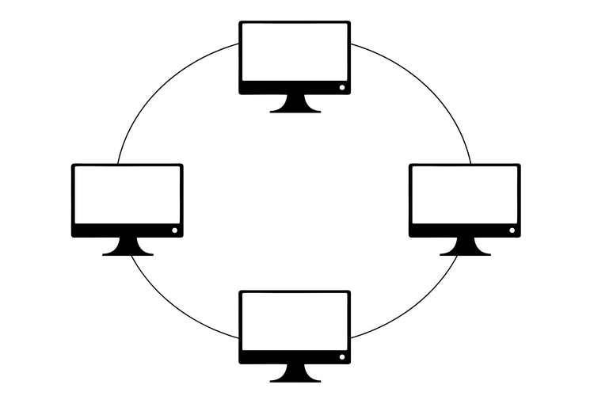
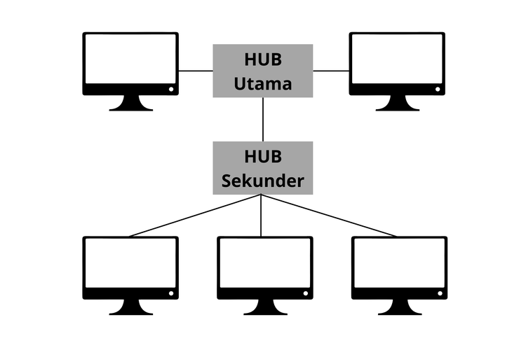
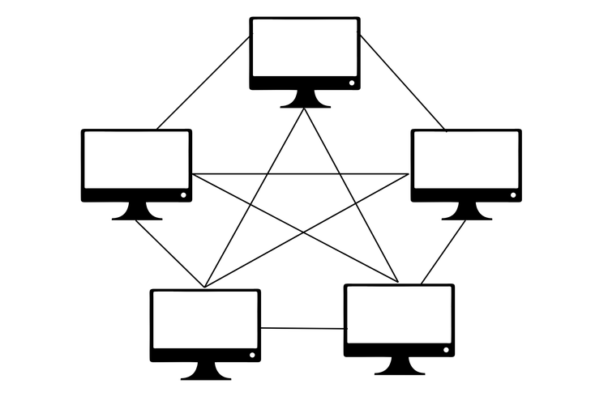

Apa itu Topologi Jaringan?
Topologi jaringan adalah pola atau metode yang digunakan untuk menghubungkan beberapa komputer atau perangkat dalam jaringan, baik secara fisik maupun logis. Ini mengatur bagaimana node (perangkat) saling berkomunikasi dan bagaimana data mengalir dalam sistem tersebut.
Topologi Bus

Topologi Bus adalah konfigurasi jaringan linear di mana semua perangkat komputer terhubung ke satu kabel utama sebagai jalur transmisi tunggal. Kabel pusat ini bertindak seperti koridor utama atau tulang punggung (backbone) tempat data mengalir dari satu ujung ke ujung lainnya.
Cara Kerja:
Seluruh komputer terhubung secara estafet ke satu kabel panjang yang disebut backbone. Ketika sebuah data dikirim, data tersebut akan berjalan sepanjang kabel utama dan melewati semua komputer. Setiap komputer akan memeriksa apakah data tersebut ditujukan untuk dirinya. Jika iya, data diterima; jika tidak, data diabaikan. Di ujung kabel, terdapat Terminator untuk menyerap sinyal agar tidak memantul kembali dan menyebabkan gangguan.
Kelebihan:
•Sangat Hemat Biaya: Kebutuhan kabel sangat minim karena perangkat cukup dijajarkan di sepanjang kabel utama.
•Instalasi Sederhana: Cocok untuk setup jaringan darurat atau skala kecil yang tidak memerlukan pengaturan rumit.
Kekurangan:
•Titik Kegagalan Tunggal: Jika kabel utama patah atau putus di tengah, seluruh jaringan setelah titik tersebut (atau bahkan seluruhnya) akan mati total.
•Tabrakan Data: Karena hanya ada satu jalur, jika dua komputer mengirim data secara bersamaan, akan terjadi tabrakan data yang memperlambat jaringan.
•Sulit Melacak Masalah: Jika jaringan mati, teknisi harus memeriksa sambungan satu per satu di sepanjang kabel.
Topologi Star

Topologi Star adalah desain jaringan di mana setiap perangkat (komputer, printer, dll.) terhubung langsung ke satu perangkat pusat seperti hub atau switch. Perangkat pusat ini bertindak sebagai pengatur lalu lintas, yang mengarahkan semua aliran data antar perangkat dalam jaringan.
Cara Kerja:
Setiap komputer atau node memiliki kabel tersendiri yang terhubung langsung ke sebuah perangkat pusat, biasanya berupa Switch atau Hub. Ketika Komputer A ingin mengirim data ke Komputer B, data tersebut dikirim terlebih dahulu ke Switch pusat. Switch kemudian membaca alamat tujuan (MAC Address) dan langsung meneruskannya ke Komputer B tanpa mengganggu perangkat lain.
Kelebihan:
•Isolasi Kerusakan: Jika salah satu kabel LAN putus atau kartu jaringan (NIC) komputer rusak, hanya komputer tersebut yang terputus dari jaringan. Komputer lain tetap berfungsi normal.
•Kemudahan Manajemen: Sangat mudah untuk menambah atau mengurangi komputer baru tanpa perlu mematikan jaringan.
•Deteksi Masalah Cepat: Kerusakan mudah dilacak karena setiap perangkat memiliki jalur kabel tunggal ke pusat.
Kekurangan:
•Ketergantungan Pusat: Jika Switch atau Hub pusat mengalami kerusakan fisik atau hang, seluruh jaringan akan lumpuh total.
•Biaya Kabel: Membutuhkan jumlah kabel yang jauh lebih banyak dibandingkan topologi Bus karena setiap perangkat wajib ditarik kabel tersendiri ke pusat.
Topologi Ring

Topologi ring adalah jaringan komputer di mana setiap perangkat terhubung ke dua perangkat lain, membentuk pola melingkar (cincin). Data mengalir searah atau berlawanan arah dari satu perangkat ke perangkat berikutnya menggunakan token. Jika satu perangkat rusak, seluruh jaringan bisa terputus.
Cara Kerja:
Data dikirim secara estafet searah jarum jam dari satu komputer ke komputer berikutnya menggunakan token (tiket digital); komputer yang ingin mengirim data akan mengisi token dengan pesan dan alamat tujuan, kemudian token tersebut berputar dalam lingkaran hingga disalin oleh komputer penerima dan kembali ke pengirim untuk dikosongkan.
Kelebihan:
•Hemat Kabel: Biaya instalasi dan kebutuhan kabel jauh lebih sedikit dibandingkan topologi mesh atau star.
•Performa Stabil: Aliran data lebih teratur karena menggunakan sistem token passing, yang mencegah terjadinya tabrakan data (collision).
•Pengaturan Mudah: Penambahan atau pemindahan perangkat bisa dilakukan dengan relatif mudah tanpa harus merombak seluruh jaringan dari pusat.
Kekurangan:
•Sensitif Terhadap Kerusakan: Jika satu kabel atau perangkat rusak (putus), koneksi seluruh jaringan akan terganggu atau mati total.
•Sulit Troubleshooting: Saat terjadi gangguan, pelacakan letak masalah memakan waktu karena tidak ada titik pusat.
•Perlu Down Time: Untuk menambah atau mengurangi perangkat, jaringan biasanya harus dihentikan sementara waktu.
Topologi Tree

Topologi Tree adalah jaringan komputer bertingkat yang menggabungkan topologi star dan bus. Jaringan ini memiliki satu pusat (node root) yang terhubung ke cabang-cabang (node intermediate) hingga ke perangkat pengguna (node leaf), membentuk struktur hierarki yang menyerupai cabang pohon.
Cara Kerja:
Data mengalir secara hierarkis. Setiap kelompok perangkat diatur menggunakan hub atau switch (seperti topologi star), kemudian setiap kelompok dihubungkan ke kabel utama (backbone) seperti topologi bus.
Kelebihan:
•Skalabilitas Sangat Tinggi: Menambah komputer atau cabang baru dapat dilakukan dengan mudah tanpa mengganggu kinerja perangkat yang sudah aktif.
•Manajemen Jaringan Terpusat: Struktur hierarki memudahkan pengaturan data, pengawasan lalu lintas, dan penerapan kebijakan keamanan dari titik pusat (root).
•Isolasi Kerusakan Mudah: Jika salah satu cabang atau node pengguna mengalami kerusakan, masalah tersebut tidak akan menyebar ke cabang jaringan lainnya.
•Identifikasi Masalah Cepat: Struktur bertingkat yang jelas membuat teknisi dapat mendeteksi lokasi kabel putus atau perangkat rusak secara instan.
Kekurangan:
•Ketergantungan Backbone Tinggi: Kabel utama bertindak sebagai jalur tunggal; jika kabel ini putus, seluruh komunikasi antarcabang akan lumpuh total.
•Biaya Instalasi Mahal: Membutuhkan jumlah kabel yang sangat banyak serta perangkat penghubung (hub/switch) ekstra di setiap tingkatan cabang.
•Konfigurasi Rumit: Perancangan jalur data dan pemasangan kabel memerlukan ketelitian tinggi agar tidak terjadi tabrakan data (collision).
•Perawatan Sulit: Semakin banyak cabang dan tingkatan jaringan yang dibangun, maka proses pemeliharaan dan pelacakan error akan semakin kompleks.
•Potensi Traffic Congestion: Data dari semua cabang harus melewati jalur pusat yang sama, sehingga rentan memicu penumpukan arus data jika kapasitas tidak memadai.
Topologi Mesh

Topologi Mesh adalah desain jaringan di mana setiap perangkat (node) saling terhubung langsung satu sama lain. Sistem ini memiliki redundansi tinggi. Jika satu jalur kabel atau koneksi terputus, data dapat dialihkan melalui jalur alternatif. Topologi ini sangat andal untuk sistem kritikal.
Cara Kerja:
Jaringan di mana setiap perangkat (node) terhubung langsung satu sama lain. Data dikirim melalui jalur tercepat secara real-time. Jika satu jalur rusak, data otomatis dialihkan ke jalur lain (routing dan flooding), memastikan koneksi tetap stabil tanpa single point of failure.
Kelebihan:
•Keandalan Tinggi: Tidak ada titik kegagalan tunggal (single point of failure), sehingga kerusakan satu jalur tidak melumpuhkan seluruh jaringan.
•Keamanan & Privasi: Data dikirim langsung ke perangkat tujuan melalui jalur pribadi, meminimalkan risiko intersepsi.
•Performa Stabil: Kecepatan transfer data lebih konsisten karena tidak harus berbagi bandwidth dengan perangkat lain sekaligus
Kekurangan:
•Biaya Tinggi: Membutuhkan jumlah kabel (untuk jaringan kabel) dan port I/O yang sangat banyak. Untuk perangkat sejumlah n, jumlah koneksi maksimal dihitung dengan rumus \(\frac{n(n-1)}{2}\).
•Instalasi Rumit: Memerlukan konfigurasi yang kompleks dan manajemen perawatan yang sulit.